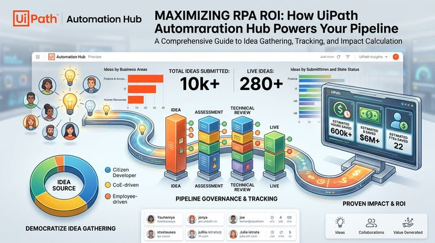
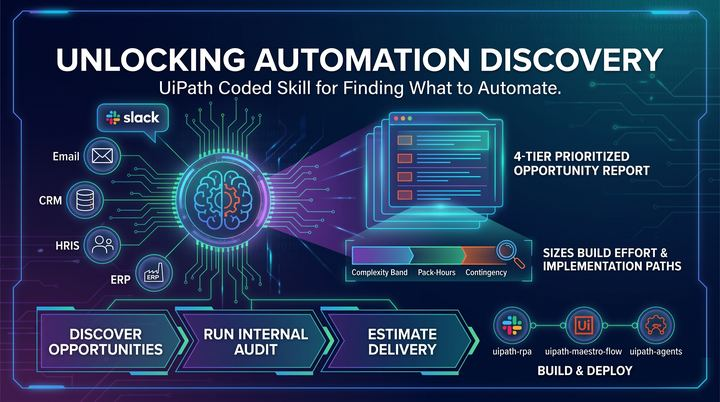

Season 1 · in progress
The UiPath Uncharted Journal
Written companions to the show - the deep dives, the links and the bits that didn't fit in the episode. We're starting where every automation programme should: the Discover layer. The other four pillars get charted as each episode lands.
- episodes out
- 3
- pillars charted
- 1 / 5
- posts so far
- 3
Platform pillars
charted so far · the rest is coming
-

Discover shippedAutomation Hub: the pipeline before the pipeline
Episode 1 companion, with Jacqui Muller. How ideas get captured, scored and governed before a single bot is built, and why that front door decides the programme.
-

Discover shippedAutomation Discovery Skill: the REAL data analyst
An agentic skill that assembles evidence about how a team actually works, then ranks automation candidates you were never going to ask about.
-
Discover shipped
UiPath Delegate & Cartographer
Episode 3 companion, with Annalise Olivier. A desktop agent that acts and an AI mapper that documents the as-is — two sides of the same discovery problem.
Nothing matches that yet.
Try a broader term — or a different pillar.